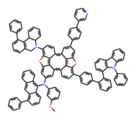
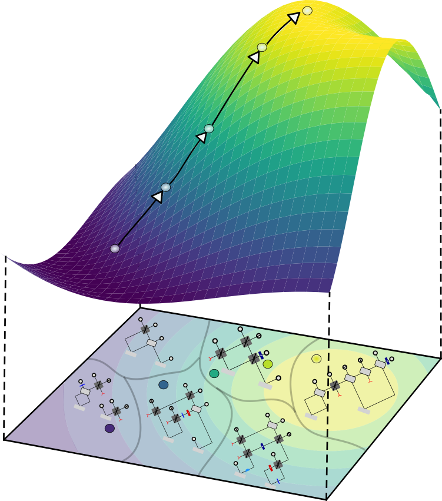
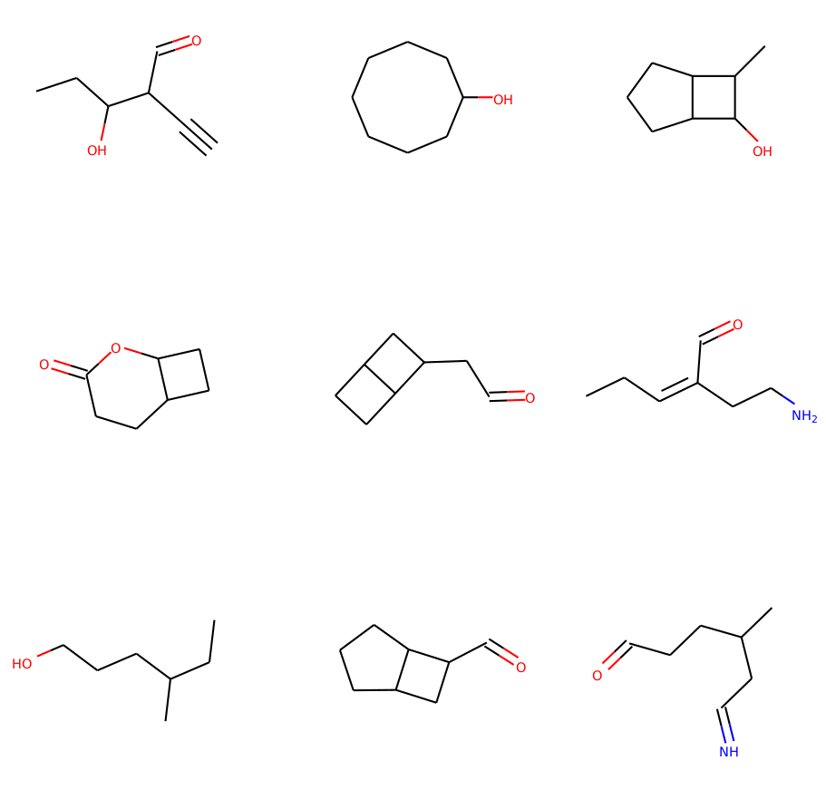
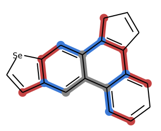

Daniel Flam-Shepherd
I'm a machine learning Ph.D. student at the University of Toronto in the
Department of Computer Science
and the Vector Institute.
My supervisor is Alan Aspuru-Guzik.
My research interests include:
● Deep generative models for scientific discovery
● 3D molecular design using reinforcement learning
Previously I worked on priors for Bayesian neural networks with
David Duvenaud.
Papers, preprints and projects

Keeping it Simple: Language Models can learn Complex Molecular Distributions
Deep generative models of molecules have grown immensely in popularity, trained on relevant datasets, these models are used to search through chemical space. The downstream utility of generative models for the inverse design of novel functional compounds depends on their ability to learn a training distribution of molecules. The most simple example is a language model that takes the form of a recurrent neural network and generates molecules using a string representation. More sophisticated are graph generative models, which sequentially construct molecular graphs and typically achieve state of the art results. However, recent work has shown that language models are more capable than once thought, particularly in the low data regime. In this work, we investigate the capacity of simple language models to learn distributions of molecules. For this purpose, we introduce several challenging generative modeling tasks by compiling especially complex distributions of molecules. On each task, we evaluate the ability of language models as compared with two widely used graph generative models. The results demonstrate that language models are powerful generative models, capable of adeptly learning complex molecular distributions -- and yield better performance than the graph models. Language models can accurately generate: distributions of the highest scoring penalized LogP molecules in ZINC15, multi-modal molecular distributions as well as the largest molecules in PubChem.
Daniel Flam-Shepherd, Kevin Zhu, Alan Aspuru-Guzik
preprint , 2021
Daniel Flam-Shepherd, Kevin Zhu, Alan Aspuru-Guzik
preprint , 2021

Learning Interpretable Representations of Entanglement in Quantum Optics Experiments
using Deep Generative Models Quantum physics experiments produce interesting phenomena such as interference or entanglement, which is a core property of numerous future quantum technologies. The complex relationship between a quantum experiment's structure and its entanglement properties is essential to fundamental research in quantum optics but is difficult to intuitively understand. We present the first deep generative model of quantum optics experiments where a variational autoencoder (QOVAE) is trained on a dataset of experimental setups. In a series of computational experiments, we investigate the learned representation of the QOVAE and its internal understanding of the quantum optics world. We demonstrate that the QOVAE learns an intrepretable representation of quantum optics experiments and the relationship between experiment structure and entanglement. We show the QOVAE is able to generate novel experiments for highly entangled quantum states with specific distributions that match its training data. Importantly, we are able to fully interpret how the QOVAE structures its latent space, finding curious patterns that we can entirely explain in terms of quantum physics. The results demonstrate how we can successfully use and understand the internal representations of deep generative models in a complex scientific domain. The QOVAE and the insights from our investigations can be immediately applied to other physical systems throughout fundamental scientific research.
Daniel Flam-Shepherd, Tony Wu, Xumei Gu, Alba Cervera Lierta, Mario Krenn, Alan Aspuru-Guzik
preprint , 2021
using Deep Generative Models Quantum physics experiments produce interesting phenomena such as interference or entanglement, which is a core property of numerous future quantum technologies. The complex relationship between a quantum experiment's structure and its entanglement properties is essential to fundamental research in quantum optics but is difficult to intuitively understand. We present the first deep generative model of quantum optics experiments where a variational autoencoder (QOVAE) is trained on a dataset of experimental setups. In a series of computational experiments, we investigate the learned representation of the QOVAE and its internal understanding of the quantum optics world. We demonstrate that the QOVAE learns an intrepretable representation of quantum optics experiments and the relationship between experiment structure and entanglement. We show the QOVAE is able to generate novel experiments for highly entangled quantum states with specific distributions that match its training data. Importantly, we are able to fully interpret how the QOVAE structures its latent space, finding curious patterns that we can entirely explain in terms of quantum physics. The results demonstrate how we can successfully use and understand the internal representations of deep generative models in a complex scientific domain. The QOVAE and the insights from our investigations can be immediately applied to other physical systems throughout fundamental scientific research.
Daniel Flam-Shepherd, Tony Wu, Xumei Gu, Alba Cervera Lierta, Mario Krenn, Alan Aspuru-Guzik
preprint , 2021

Graph Deconvolutional Generation
Graph generation is an extremely important task, as graphs are found throughout different areas of science and engineering.
In this work, we focus on the modern equivalent of the Erdos-Renyi random graph model: the graph variational autoencoder (GVAE).
This model assumes edges and nodes are independent in order to generate entire graphs at a time using a multi-layer perceptron decoder.
As a result of these assumptions, GVAE has difficulty matching the training distribution and relies on an expensive graph matching procedure.
We improve this class of models by building a message passing neural network into GVAE's encoder and decoder.
We demonstrate our model on the specific task of generating small organic molecules.
Daniel Flam-Shepherd, Tony Wu, Alan Aspuru-Guzik
preprint , 2019
Daniel Flam-Shepherd, Tony Wu, Alan Aspuru-Guzik
preprint , 2019

Neural Message Passing on Higher Order Paths
Graph neural network (GNNs) have achieved impressive results in predicting molecular properties,
but do not directly account for local and hidden structures such as functional groups and molecular geometry.
At every layer, GNNs aggregate only over first order neighbours, ignoring important
information contained in subsequent neighbours as well as the relationships between those higher order connections.
In this work, we generalize graph neural nets to pass messages and aggregate across
higher order paths. This allows information to propagate over various levels and substructures of the graph.
We demonstrate our model on a few tasks in molecular property prediction.
Daniel Flam-Shepherd, Tony Wu Pascal Friederich Alan Aspuru-Guzik
preprint , 2019
Daniel Flam-Shepherd, Tony Wu Pascal Friederich Alan Aspuru-Guzik
preprint , 2019

Characterizing and warping the function space of Bayesian neural networks
In this work we develop a simple method to construct priors for Bayesian neural networks
that incorporates meaningful prior information about functions. We fit neural nets to samples of functions
using a hypernetwork, in order to use the empirical moments of the learned weights for our prior parameters.
This method allows us to characterize the relationship between weight space and function space.
Daniel Flam-Shepherd, James Requeima, David Duvenaud
NIPS Workshop on Bayesian Deep Learning, 2018
Daniel Flam-Shepherd, James Requeima, David Duvenaud
NIPS Workshop on Bayesian Deep Learning, 2018

Mapping Gaussian process priors to Bayesian Neural Networks
What defines a reasonable prior to use in Bayesian models?
Often, normal distributions are placed over the weights for convenience and
are interpreted as a bias toward less complex functions via smaller weights.
Gaussian processes, on the other hand, have a elegant mechanism for incorporating
prior beliefs about the underlying function - specifying the mean and covariance functions.
In this work, we present an approach to specify a more principled prior for
Bayesian Neural Networks that can leverage the well studied kernel design techniques
from Gaussian process regression.
Daniel Flam-Shepherd, James Requeima, David Duvenaud
NIPS Workshop on Bayesian Deep Learning, 2017
Daniel Flam-Shepherd, James Requeima, David Duvenaud
NIPS Workshop on Bayesian Deep Learning, 2017